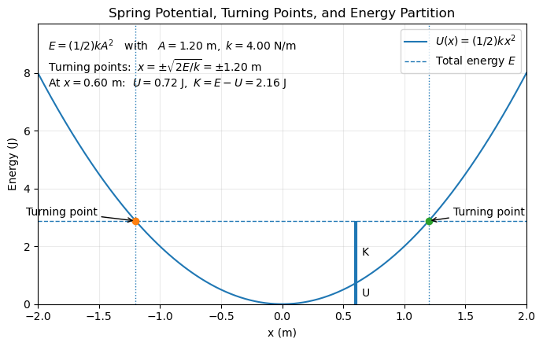
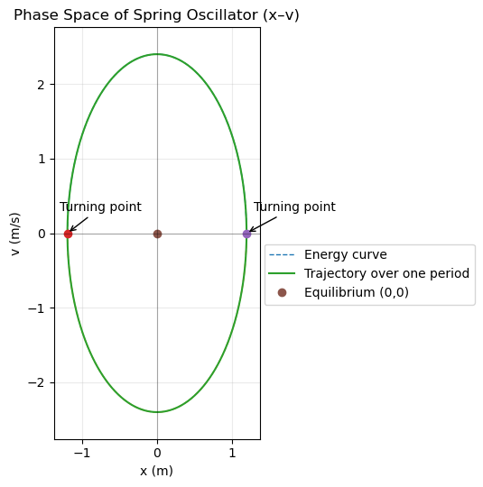

B12.4 Stability and Potential Energy#
B12.4.1 Motivation#
The concept of stability lies at the core of all physical systems — it tells us whether a system will return to equilibrium after a small disturbance, or diverge away into new motion. By examining how potential energy varies with position, we can determine the behavior near equilibrium without solving the equations of motion directly.
The graph of potential energy, \(U(x)\), is a powerful visual tool. It reveals at a glance whether equilibrium points are stable, unstable, or neutral, and provides a direct connection between force, energy, and motion.
This same analysis helps us understand:
Planetary motion: why bound orbits (elliptical) correspond to potential wells and unbound orbits (hyperbolic) correspond to escape energies.
Engineering systems: how bridges, buildings, or suspension systems respond to small oscillations or large perturbations.
Chemistry: how atoms vibrate about equilibrium positions in molecular bonds.
Biology and physiology: how the body maintains balance, and how biological rhythms return to homeostasis after small deviations.
In essence, stability analysis is the universal lens through which we understand equilibrium and motion — from molecular vibrations to galactic dynamics.
B12.4.2 Taylor Expansion of the Potential Energy#
Near any equilibrium position \(x_0\), we can approximate a smooth potential energy function using a Taylor expansion:
At equilibrium, the net force is zero (or the slope of the potential energy vs. position is zero), so
Thus, near \(x_0\) we have:
where
is the effective stiffness or curvature of the potential well.
B12.4.3 Stability Criteria#
Stable equilibrium: \(k_{\text{eff}} > 0\), or \(\dfrac{d^2U}{dx^2} > 0\).
The potential has a minimum; the system oscillates about \(x_0\).Unstable equilibrium: \(k_{\text{eff}} < 0\), or \(\dfrac{d^2U}{dx^2} < 0\).
The potential has a maximum; small displacements grow over time.Neutral equilibrium: \(k_{\text{eff}} = 0\).
The potential is flat near \(x_0\), and the system experiences no restoring force.
These correspond to what we call fixed points — positions where the force (the slope of \(U\)) is zero.
Whether a fixed point is stable or unstable depends on the curvature of \(U\) at that point.
B12.4.4Turning Points and Motion in a Potential#
When total mechanical energy is conserved,
the kinetic energy is
At points where \(E = U(x)\), the velocity \(v = 0\).
These are called turning points — the particle reverses direction there.
For bound motion, \(E < U_{\text{max}}\), the particle oscillates between two turning points.
For unbound motion, \(E > U_{\text{max}}\), it escapes the potential well.
This simple graphical interpretation of \(U(x)\) versus \(x\) is extremely powerful — it lets us visualize dynamics without solving equations.
B12.4.5 Fixed Points and Phase Space#
In one dimension, fixed points correspond to locations where both \(v=0\) and \(F=-\dfrac{dU}{dx}=0\).
Plotting motion in phase space (position vs. velocity) reveals:
Stable points: small closed loops (oscillations).
Unstable points: diverging trajectories.
Saddle points: mixed behavior (stable in one direction, unstable in another).
These patterns generalize beautifully to higher-dimensional systems.
B12.4.6 Example#
Spring System
For a spring with potential energy
the equilibrium is at \(x_0 = 0\).
Then,
Since \(k > 0\), the equilibrium is stable, and we recover simple harmonic motion:
If instead \(U(x) = -\tfrac{1}{2}k x^2\), then \(k_{\text{eff}} < 0\) and equilibrium becomes unstable — any small displacement grows exponentially rather than oscillating.

Interpretation of the \(U(x)\) vs. \(x\) Plot
The potential energy curve \(U(x) = \tfrac{1}{2} k x^2\) represents a parabolic potential well centered at the equilibrium position \(x = 0\).
This shape is characteristic of all systems undergoing simple harmonic motion — the curvature of the parabola determines how strongly the system is pulled back toward equilibrium.
The horizontal dashed line represents the system’s total mechanical energy, \(E = \tfrac{1}{2}kA^2\), which remains constant throughout the motion.
The intersection points of this line with the potential curve mark the turning points (\(x = \pm A\)), where the particle momentarily stops before reversing direction.
At these points, the energy is entirely potential, and the kinetic energy is zero.
At any other position \(x\) within this range:
The potential energy \(U(x)\) is proportional to \(x^2\), increasing as the mass moves away from equilibrium.
The kinetic energy \(K = E - U(x)\) fills the remaining portion up to \(E\), decreasing as potential energy increases.
The vertical bars at \(x_*\) in the plot illustrate this continuous exchange between \(U\) and \(K\).
The shape of the curve and the horizontal energy line together provide a complete graphical picture of the dynamics:
Motion is confined between the turning points (\(E = U\)).
The slope of \(U(x)\), \(F = -dU/dx = -kx\), gives the restoring force, always directed toward equilibrium.
The curvature of the potential determines the angular frequency of oscillation, \(\omega = \sqrt{k/m}\).
In short, this single graph encapsulates both energetic and dynamical information:
the system’s energy conservation, its limits of motion, and the linear restoring behavior that defines simple harmonic motion.

Interpretation of the Phase Space Plot
The phase space plot displays the oscillator’s state in terms of position (\(x\)) and velocity (\(v\)) rather than energy versus position.
Each point on the curve represents a specific state of motion — that is, where the mass is and how fast it is moving at a given instant.
For a simple harmonic oscillator, the trajectory forms a perfect ellipse described by the equation
which comes directly from the conservation of energy,
Key Features of the Plot
Elliptical Shape:
The ellipse represents all combinations of \(x\) and \(v\) that correspond to the same total energy \(E\).
Every point on the ellipse satisfies energy conservation — as \(x\) increases, \(v\) must decrease, and vice versa.Turning Points:
The intersections with the \(x\)-axis (\(x = \pm A\), \(v = 0\)) mark the turning points, where the kinetic energy is zero and potential energy is maximal.Equilibrium Point:
The origin (\(x=0\), \(v=0\)) is the equilibrium — the point of minimum potential energy.
The trajectory passes through this point with the maximum velocity, when all the energy is kinetic.Direction of Motion:
As time evolves, the state moves smoothly around the ellipse in a counterclockwise or clockwise loop depending on the initial conditions.
The system cycles through all energy exchanges in one period \(T = 2\pi/\omega\).
Physical Interpretation
The phase space view provides a powerful, compact picture of the oscillator’s dynamics:
It unites both position and momentum (or velocity) into a single geometric description.
The closed elliptical orbit signifies periodic motion and energy conservation.
The size of the ellipse grows with the system’s energy — larger amplitude means higher velocity extremes and a larger phase-space loop.
In systems with friction, these ellipses would gradually spiral inward (energy loss), while in driven systems, new limit cycles or more complex trajectories may appear.
Thus, the phase-space representation forms the foundation for understanding not only simple oscillations but also more complex and chaotic dynamical systems.
B12.4.7 Beyond the Harmonic Approximation#
For small displacements, the quadratic term dominates and motion is harmonic.
But when displacements grow large, the neglected higher-order terms in the Taylor series become important:
These nonlinear terms cause anharmonicity — oscillations whose frequency depends on amplitude — and can lead to complex phenomena such as bifurcations, resonances, and even chaotic motion.
B12.4.8 Broader Implications#
The same stability framework extends far beyond simple mechanical systems:
In engineering, it predicts the onset of failure or oscillation in mechanical and electrical systems.
In chemistry, potential energy surfaces determine reaction stability and transition states.
In biology, stable equilibria correspond to homeostasis, while unstable ones describe critical thresholds or tipping points in biological systems.
In astrophysics, the gravitational potential explains the difference between circular, elliptical, and unbound orbits.
And in nonlinear dynamics, studying small perturbations around equilibrium gives insight into how systems transition from regular to chaotic behavior.
B12.4.9 Summary#
Whenever the potential energy curve has a local minimum, small perturbations lead to stable, oscillatory motion (SHM).
A maximum leads to instability, and a flat potential gives neutral equilibrium.These simple principles — derived from the shape of \(U(x)\) — form the foundation for understanding stability, oscillations, and chaos across all of science and engineering.